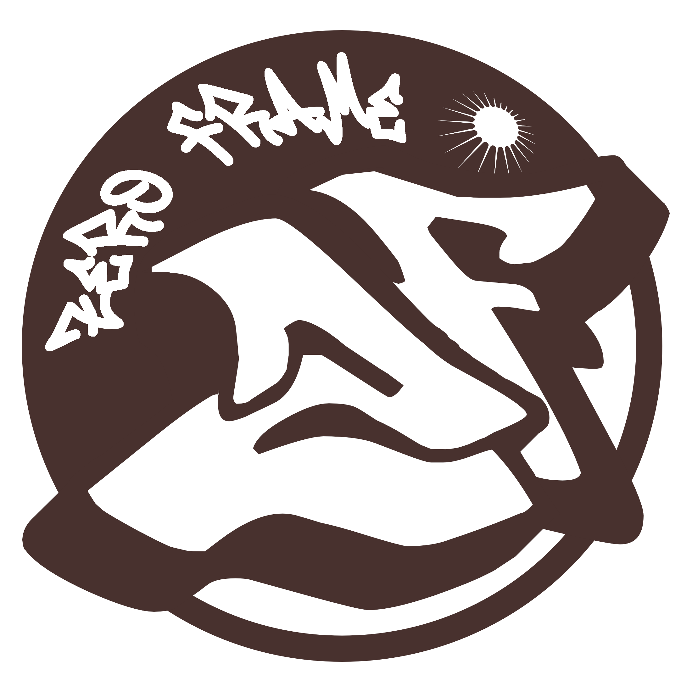

Sobre nós
A Zero Frame é uma marca de moda streetwear criada em São Paulo em 2025,
inspirada na cultura urbana e na essência do skate dos anos 2000. Nascida em meio à movimentação da
cidade, a marca carrega como base a liberdade de expressão, a criatividade e a atitude presentes nas
ruas, traduzindo esses elementos em peças que refletem um estilo autêntico e
contemporâneo.
Voltada principalmente para adolescentes e jovens adultos, a Zero Frame busca se
conectar com uma geração que valoriza identidade, estilo e originalidade. A marca trabalha com
roupas e acessórios de diversas marcas, trazendo variedade e tendências do universo streetwear, além
de desenvolver camisetas próprias com designs exclusivos, influenciados pela estética Y2K, pelo
cenário do skate e pela cultura urbana.
Cada peça é pensada para representar mais do que moda,
mas um estilo de vida, onde o visual se torna uma forma de expressão pessoal. A loja física,
localizada em São Paulo, foi criada para ser mais do que um ponto de venda, funcionando também como
um espaço de encontro para pessoas que compartilham dos mesmos interesses, ideias e referências.
A Zero Frame não é apenas uma marca, mas um reflexo da cultura de rua, unindo moda, atitude e identidade em um só lugar.
Fundadores

Gustavo Souza
Engenharia de Software
Estudante de Análise e Desenvolvimento de Sistemas, com interesse em Inteligência Artificial, automação de processos e tecnologia aplicada ao ambiente corporativo. Possui experiência na área administrativa, contribuindo para o desenvolvimento de uma visão voltada à otimização de tarefas e integração de sistemas. Perfil dedicado e interessado em inovação, buscando aprimorar conhecimentos em soluções inteligentes e automações.

Jesuan Duarte
Back-End e Banco de Dados
Desenvolvedor em formação com foco em back-end, com experiência no desenvolvimento de sistemas utilizando C# e ASP.NET Core, aplicando arquitetura em camadas, boas práticas de software e integração de sistemas. Perfil dedicado e interessado em tecnologia, buscando constantemente aprimorar conhecimentos em segurança, experiência do usuário e desenvolvimento de aplicações modernas.

Murilo Cruz Rodrigues
Front End e Design UI/UX
Desenvolvedor em início de carreira com foco em front-end, com experiência na construção de interfaces utilizando HTML, CSS e JavaScript, com atenção às boas práticas de UI/UX e responsividade. Perfil criativo e interessado em design, contribuindo para a criação de soluções modernas e funcionais.

Pedro Calqui
Machine Learning e Front-End
Profissional com foco em Inteligência Artificial aplicada a negócios, com experiência em automação de processos comerciais e desenvolvimento de agentes de IA. Atua com ferramentas como n8n, Claude, OpenClaw e Google Cloud Platform, criando soluções escaláveis e eficientes para otimização de processos. Perfil analítico e orientado a resultados, unindo visão estratégica e interesse constante por inovação tecnológica.

Pedro Silva
Back-End e Banco de Dados
Desenvolvedor em formação com foco em desenvolvimento web e back-end, com interesse em banco de dados, Python e criação de sistemas funcionais e organizados. Perfil analítico e criativo, buscando constantemente aprender novas tecnologias e aprimorar habilidades práticas no desenvolvimento de soluções eficientes e modernas.

Ricardo Mariano
Engenharia de Software e Full-Stack
Técnico em Informática e estudante de Análise e Desenvolvimento de Sistemas, com foco em análise de dados e desenvolvimento back-end. Possui experiência com linguagens como Python, PHP, C e C#, além de conhecimentos em bancos de dados relacionais e tecnologias front-end utilizando HTML, CSS e JavaScript. Perfil dinâmico e colaborativo, com interesse em resolução de problemas, liderança técnica e desenvolvimento de soluções eficientes.

Vinicius Pescuma
Engenharia de Software
Profissional da área de tecnologia com foco em automação e inteligência artificial, atuando em suporte técnico e operação de chatbots com IA. Possui experiência com processos automatizados e soluções tecnológicas voltadas ao atendimento e suporte de sistemas. Perfil analítico e proativo, com forte interesse em inovação, aprendizado contínuo e desenvolvimento de soluções modernas e eficientes.